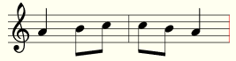
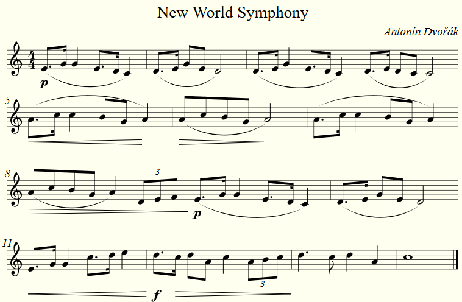

Notes only
The following example is actually less than the minimum:
ABC notation:
A2 Bc|cB A2|
Result:
Some basic information is missing, but it still works with Abcjs due to some predefined default values.
In this example the application "supposes" that the metre is 4/4, the note unit length is 1/8 and that the key (clef) is C.
Notes and minimum header tags
The following example is normally considered as the minimum defined in the ABC notation standard:
ABC notation:
X:1
M:2/4
L:1/8
K:C
A2 Bc|cB A2|
Result:

Notations and their meanings:
X:1 | The piece of music shown in the file is number 1. Most abc files contain only one piece of music, but it can contain more. |
M:4/4 | The metre is 4/4. |
K:C | The key (clef) is treble. |
L:1/8 | The note unit length is 1/8. |
So, if we want to display a note of a length of 1/4, we put a 2 behind the note.
Likewise, A/2 or A1/2 would display a note of a sixteenth unit length as follows:
ABC notation:
X:1
M:2/4
L:1/8
K:C
A/2 A1/2 Bc|cB A2|
Result:

Example for a choir score
ABC notation:
X: 1
T: ¡Ay! Linda Amiga
C: Anónimo
O: s. XVI
M: 2/4
L: 1/8
K: C
%%barsperstaff 8
%%vocalfont Times 12
%%score [1 | 2 | 3 | 4]
%%scale 0.95
%%pagewidth 21cm
V:1 name="Soprano" sname="S."
A2 Ac|B2 BG|A2 GF|E2 E2|A2 Ac|BB BG|A2 GF|E2E2||
w:¡Ay! lin da~a mi-ga que no vuel-vo~a ver-te, cuer-po ga-rri do que me lle-va~a la muer-te
V:2 name="Alto" sname="A."
A2 AA|G2 GE|F2 DF|E2 E2|A2 AA|GG GE|F2 DF|E2 E2||
V:3 name="Tenor" sname="T."
c2 cc|e2 ee|d2AA|c2 c2|c2 cc|ee ee|d2 AA|c2 c2||
w:¡Ay! lin da~a mi-ga que no vuel-vo~a ver-te, cuer-po ga-rri do que me lle-va~a la muer-te
V:4 bass name="Bajo" sname="B."
B,2 B,B,|F,2 F,F,|E,2 E,E,|B,2 B,2|B,2 B,B,|F,F, F,F,|E,2 E,E,|B,2 B,2||
Result:

Notations and their meanings:
T: ¡Ay! Linda Amiga | The title. Note that a second line with a T: tag would create a second title line. |
C: Anónimo | The author. |
O: s. XVI | The origin, year, date etc., displayed in brackets. |
%%barsperstaff 8 | 8 bars per staff. |
%%vocalfont Times 12 | The font used for the vocals. |
%%score [1 | 2 | 3 | 4] | 4 voices per block. |
%%scale 0.95 | The scaling, so that the full staff fits on one page. |
%%pagewidth 21cm | The width of the page (here A4). |
V:1 name="Soprano" sname="S." | The first block shows "Soprano" in front, all further blocks only an "S." |
w:¡Ay! lin da~a mi-ga | The vocals. Spaces and hyphens are understood as a new note. |
Some more often used symbols in ABC notation
ABC notation:
X: 1
T: New World Symphony
C: Antonín Dvořák
%%measurenb 0
M: 4/4
L: 1/8
%Q:120
(!p!E>G G2 E>D C2)|(D>E GE D4)|(D>E G2 E>D C2)|(D>E DC C4)|
(!<(!A>c c2 BG !<)!A2)|(!>(!AcBG !>)!A4)|(A>c c2BG A2)|
(!>(!AcBG A2) (3 DEF!>)!|(!p!E>G G2 E>D C2)|(D>E GE D4)|
!<(!E>G G2 c>d e2!<)!|!f!d>!>(!c dA c2 (3 ABc!>)!|d3 c d2 A2|c8|]
Result:
Notations and their meanings:
!p! | Dynamics (here: piano) placed under the note. |
(D E) | Notes in brackets: slur (legato) |
E>G | "Greater than" splits the notes before and after the symbol in the ration 3:1. |
(3 ABc | Triplet |
!<(! | Crescendo start |
!<)! | Crescendo end |
!>(! | Diminuendo start |
!>)! | Diminuendo end |
The notes
ABC notation:
A, B, C D E F G A B c d e f g a b c' d' e'
Result:

Bass key
ABC notation:
X: 1
M:4/4
K: C
L: 1/8
V: 1 bass
D z G,F, z2 B,2|
Result:

Notations and their meanings:
V: 1 bass | One vocal line only. Bass. |
z | Break. |
ABC notation:
X: 1
K: C bass
L: 1/4
C,, D,, E,, F,, G,, A,, B,, C, D, E, F, G, A, B, c, d, e, f, g,
Result:

Notations and their meanings:
K: C bass | Bass clef. |